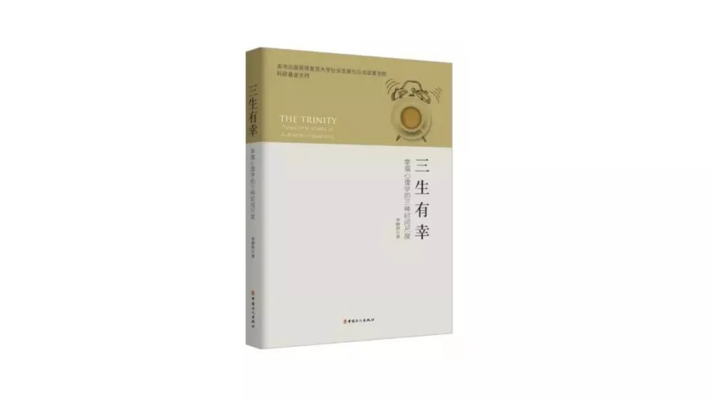

《三生有幸》：世界因颗粒度而改变
史建刚 开智学堂| 微信号 | openmindclub |
| 功能介绍 | 开智学堂，促进你的人生发展。为你提供信息分析、行为分析等人生关键技能课程；以及人生战略设计等咨询服务。 |
「三生有幸」的字面意思是——运气好。
有多好呢？
两百年一遇的好运气。
为什么呢？
在很多国家，包括我们中国，现在人的平均期望寿命已经超过了 70 岁，而三生就是最少 200 年，所以说是两百年一遇的好运气！
显然，李晓煦老师的《三生有幸》不会这么八卦，他的《三生有幸》应该反过来读——幸有三生，人的幸福有三种，分别发生在三个生命的时间尺度上：
> 第一种，体验以秒为单位的愉悦！
>
> 第二种，实践以分钟或小时为单位的专注！
>
> 第三种，则是寻求能够跨越生命的意义！
## 世界因颗粒度而改变
「世界因颗粒度而改变」在不同的尺度下，发生着不同的故事，无论是在空间维度，还是时间维度上都适用。
在 **空间维度** 上。
比如，同样是一艘大海中航行的船，一个我们熟视无睹的事物，当我们观察的尺度和颗粒度发生变化，我们观测的结果不同，结论也不同，解决问题的方法也不同，甚至影响了我们的世界观：
> 在我们肉眼可观测的世界里：是浮力与重力的关系决定了船只的浮沉，是风向与风帆的角度决定了船只的航行。这里的故事主角是牛顿力学；
>
> 在微观的世界里（分子和原子的世界里），船只的的平衡是无数分子无规则运动，是水分子、木分子（分子式 C3H4O2）互相碰撞的统计结果。故事的主角是热力学；
>
> 在更加微观的世界里（亚原子的世界里），波函数维系了原子之间的距离，把不确定性转为可以观察得到的确定性。故事的主角是量子力学。
在 **时间维度** 上。
人的意识，在时间的维度上，要么体会以 **秒为单位的愉悦**，要么实践 **以分钟小时为单位的专注**，要么寻找 **跨越生命的意义**。
但这三者之间的关系又是如何的？
如果意义是一座宏伟的大厦，专注是块方砖，而秒级体验是砂砾。
那么秒级体验的砂砾是如何建立起这座意义的大厦的呢？
从生到死的这些个时间碎片和瞬间如何构成了人生的意义呢？
这才是意识的本质，就像沙漏过沙一样，一粒一粒的流过，流过了时间的同时也构建了空间：
> 一方面，以时间消化空间，通过脑内的认知模型不断的解释流淌在意识上的时间，对世界作出理解和解释；
>
> 另一方面，以空间消化时间，通过意识这个短小的接口，不断建立起脑内庞大的认知空间和解释系统，通过流淌的意识与已有的结构进行交互和适应，不断的重构出一层层的脑内认知空间。
## 人的意识，本质上，就是连接外部世界与脑内世界的接口
脑内世界是物质的，是一个由脑细胞和神经元通过突触等连接而成的三维世界，是一个空间现象。我们的所有认知和精神活动都是建立在神经元网络基础之上。在这个三维空间上，不是天然具备的，而是由意识通过处理一段一段的短时记忆，建立起长时记忆，构建起各种各样的模式，我们就是通过这些虚拟存在的模式来认知世界、解析世界。存在两个过程：
一、 **解释和判断**。我们用脑内的认知模式来模式化这个世界，无论是星座，算卦、迷信、知识，学科、哲学、宗教都是我们模式化世界的工具，我们在脑中对同一个现象保有不同模式化的能力，也具有不同的解释力；
二、 **构建脑内模式**。我们的意识在解读和处理外界环境的时候，也进行自我硬件编程，改变脑内神经元网络的连接方式，也称之为：长期记忆、脑内模式。
脑内的模式可以简单分为（快慢模式）：
- 快模式：自主心智，包括本能，所谓的达尔文心智，习得训练的反应模式，比如游泳技能和驾车技能，习而得之，就变成了一种本能和自动化固化在脑中，从来不需要想起，永远也不会忘记。
- 慢模式：包括算法心智和反省心智。需要我们静下来，悉心琢磨，投入全部的注意力，慢慢推理，仔细思考，甚至要借助工具进行推演、分析。
脑内的模式还可以分为（幸福的三层模式）：
- 以秒为单位的愉悦；
- 以分钟小时为单位的专注；
- 跨越生命的意义；
这几种模式之间是关系如何？能否相互转换？我们借用电脑的 IPO（Input、Process、Output）过程来解析意识的工作原理。
**输入 Input**
意识的输入有两种，一种是外部的输入，一种是内部提取的，或者内部唤醒的。
> 1.如每时每刻的短时记忆，这是外部输入。
>
> 2.再如提取某个历史记忆片段，所谓的内部提取。我们头脑是闲不下来的，不是被眼前的输入所牵动，就是被记忆中的某个片段所唤醒。
**处理 Process**
就如同计算机处理模式一样有三个要素：一个是待处理的内容（Data），一个是处理所用的算法（Algorithm 和 OS），一个是处理的硬件（HardWare）。
待处理的内容有三种：
> 1）输入的记忆：眼见、耳听等各种感官的输入转换的记忆；
>
> 2）脑内的模式：已经在脑内形成的情绪（本能）模式、认知（习得）模式、意义模式；
>
> 3）脑内储备：脑中的长时记忆，比如：知识、场景以及他们的碎片；
处理算法及过程：
> 1）多重模式启动，同时接入信息，进入多重草稿状态，并行处理；
>
> 2）某个模式获得早期优势；
>
> 3）关键信息的输入，导致某个模式被强化；
>
> 4）某个模式接管所有信息，而其他模式弱化、消隐；
>
> 5）在某个模式下，得到结论、判断；
硬件，类似 CPU + 内存：
> 1）包括两个：意识的生理载体+身体健康状况所依托的生理载体；
>
> 2）大脑的意识负荷，越轻则可用内存越多，处理也就越快；
>
> 3）身体健康状况就是 CPU，越健康 CPU 的频率越高。
**输出 OutPut**
经过大脑对信息的处理之后，身体就会诚实的产生行动，分为两种，一个种是外在的行为。另外一种，就是脑内空间的变化，也就是时间消化空间，不断细微的升级着脑内的操作系统版本。
> 1\. 对外输出：直接反应为表情和肢体动作，表达如说话、写字，行动如操作、执行；
>
> 2\. 对内输出：在大脑内构建了某种新的模式，或者强化了旧有模式，或者逆转了旧模式同时建立新模式（新的认知），再或者是默默削弱了旧模式。
对内的输出有两种情况，一种是通过反复学习、加深印象、实际操作、深刻反省，不断走上正向的模式强化路径，这个路径至为关键，是三种体验之间转换路径，如下所示：
**构建记忆 > 上升为知识 > 抽象为模式 \> 升级为意义**
**从构建记忆到知识**：我们在零散感受和体验中提取信息和暗示，通过大脑的抽象总结，形成系统的知识，是为第一阶段；
**从知识到模式**，知识毕竟还是死的，是结构化的信息而已，而通过对知识的反复实践，就形成了一种能够认知模式。比如，正态分布是概率统计方面的知识，即便你熟记各种规则，也仅仅是知识，距离模式还有很长的距离。通过反复对正态分布知识的揣摩和实践，就可能上升为模式，就能对生活中的任何问题活学活用。
比如，一个体育问题——姚明的运动机能为什么并不优秀：假如，以 180cm 的身高作为基准选拔运动员，可选材的范围非常大，比如 100 万的备选，可以选拔出运动能力非常出色的运动员；而身高一旦升到到达 200cm，那么可以选材的范围非常小了，比如（1 万人），运动强的人就少，因为运动能力是随机的，所以很难选拔优秀的运动员；如果超过 225cm，那么人才基数太少（100人），所以姚明的运动能力不会太出色，比如：弹跳力。
**从模式升级为意义**。这是一种内化的过程，也是隐性的过程，不知不觉间，我们的认知模式就决定了我们意义的定义，什么事情是值得我们做的，什么事情不值得。
还有一个负向的路线，弱化模式路线如下：
**淡化 > 遗忘 \> 逆转**
所有的长期记忆和模式，都是逆水行舟不进自退的，没有正刺激，那就会被淡化，乃至遗忘。
这便是 **意义、知识、感知** 三者之间在时空维度上的关系：
自下而上：层层递进的构建。通过感知建立信息，由信息构建知识体系，再由知识升华成为意义。
自上而下：时时审判和拷问。一旦闲暇，我们就时时刻刻用意义来拷问生活，拷问当下，评判感知和知识。
周而复始，源源不断。■

## 开智好文
**成为创造者**：[理性思维](https://mp.weixin.qq.com/s?__biz=MzA4ODM4ODQ3MQ==&mid=2651930682&idx=1&sn=af03741601a10f0c1fb0df32ae77498d&chksm=8bcf0622bcb88f34937dfb16533681bdf418c2978acb05d1ea63722e31c0eeaf11f2e402e126&scene=21#wechat_redirect)\| [自我决定论](http://mp.weixin.qq.com/s?__biz=MzA4ODM4ODQ3MQ==&mid=2651928709&idx=1&sn=f70c8d7ac6f5b042323f39700b8a96f6&scene=21#wechat_redirect) \| [成长型心智](http://mp.weixin.qq.com/s?__biz=MzA4ODM4ODQ3MQ==&mid=2651935602&idx=1&sn=d1f69d0fdb61044c796799fcb174e7a2&chksm=8bcf156abcb89c7c65a3765a37d6e28ba4eeb5eb8f9da56368af7862e3d0030dd665268d0e4b&scene=21#wechat_redirect)
**创造者故事**： [司马贺](http://mp.weixin.qq.com/s?__biz=MzA4ODM4ODQ3MQ==&mid=2651932245&idx=1&sn=2fab72b6d5c3d6f49806b7c3b815cf1d&chksm=8bcf004dbcb8895b8cc92466cc58ae54e24062859cc75174980ca494fbeb82c957e9e537a083&scene=21#wechat_redirect) \| [斯坦诺维奇](http://mp.weixin.qq.com/s?__biz=MzA4ODM4ODQ3MQ==&mid=2651928594&idx=1&sn=968ee2074c0af271a26fa354af897eff&scene=21#wechat_redirect) \| [平克](http://mp.weixin.qq.com/s?__biz=MzA4ODM4ODQ3MQ==&mid=400707306&idx=1&sn=c7be7d3970a658013a5b8371e6afe592&scene=21#wechat_redirect) \| [莱考夫](http://mp.weixin.qq.com/s?__biz=MzA4ODM4ODQ3MQ==&mid=2651929021&idx=1&sn=0ebf9034711fcbfbace238388f5232c1&scene=21#wechat_redirect) \| [诺曼](http://mp.weixin.qq.com/s?__biz=MzA4ODM4ODQ3MQ==&mid=2651931638&idx=1&sn=af411b0ace4f904cfa80feed9c59c8e0&chksm=8bcf05eebcb88cf87a0d88d703edcd7da5d9aee5dfdc5f31c6a9a94a97e93808a376168cba5b&scene=21#wechat_redirect)
**创造者书单**： [经典](http://mp.weixin.qq.com/s?__biz=MzA4ODM4ODQ3MQ==&mid=402300399&idx=1&sn=aad3b32cbb3d00dbb5edc9bef25b5c25&scene=21#wechat_redirect) \| [理性](http://mp.weixin.qq.com/s?__biz=MzA4ODM4ODQ3MQ==&mid=2651934962&idx=1&sn=bee3e4eddea865e289bb7623b239503b&chksm=8bcf16eabcb89ffc7b1f526e7b53d423b795c5dacc4541d7399190a24c1e17dc65d40821ced1&scene=21#wechat_redirect) \| [审美](http://mp.weixin.qq.com/s?__biz=MzA4ODM4ODQ3MQ==&mid=2651932727&idx=1&sn=2b7003cd3c98ee2bc15014d7189d63c8&chksm=8bcf0e2fbcb887397ee278733f4b0e5ca7f1af1a6ab82aec5dc82ec0449d4e2d020d46e661f8&scene=21#wechat_redirect) \| [黑客](http://mp.weixin.qq.com/s?__biz=MzA4ODM4ODQ3MQ==&mid=2651932507&idx=1&sn=3d879c655a4d8183f9567443ee85768c&chksm=8bcf0143bcb888554ed54e0296bde2cf20f83fe586229c240408a10e2dc20eeab9c1df27ba12&scene=21#wechat_redirect) \| [世界](http://mp.weixin.qq.com/s?__biz=MzA4ODM4ODQ3MQ==&mid=2651935428&idx=1&sn=8d3beac3d4401532fc56e2d4bd4de888&chksm=8bcf14dcbcb89dca4185382eb67e64ce51a9e34aee3844bc072ce66f133983522f83e163f186&scene=21#wechat_redirect)
****** ********点击阅读原文，购买《三生有幸》。**
********点击阅读原文，购买《三生有幸》。**
********点击阅读原文，购买《三生有幸》。**